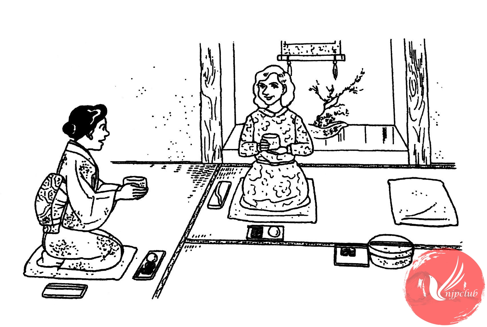

| クララ： |
一度 茶道が 見たいんですが･････。 |
| 渡 辺： |
じゃ、来週の 土曜日 いっしょに 行きませんか。 |
| ‐‐‐‐‐‐‐‐‐‐‐‐‐‐‐ | |
| お茶の先生： |
渡辺さん、お茶を たてて ください。 |
|
クララさん、お菓子を どうぞ。 |
|
| クララ： |
えっ、先に お菓子を 食べるんですか。 |
| お茶の先生： |
ええ。甘い お菓子を 食べた あとで、お茶を 飲むと、おいしいんですよ。 |
| クララ： |
そうですか。 |
| お茶の先生： |
では、お茶を 飲みましょう。 |
|
まず 右手で おちゃわんを 取って、左手に 載せます。 |
|
|
次に おちゃわんを 2回 回して、それから 飲みます。 |
|
| クララ： |
はい。 |
| お茶の先生： |
じゃ、わたしが する とおりに、して くださいね。 |
| ‐‐‐‐‐‐‐‐‐‐‐‐‐‐‐‐ | |
| クララ： |
これで いいですか。 |
| お茶の先生： |
はい。いかがですか。 |
| クララ： |
少し 苦いですが、おいしいです。 |